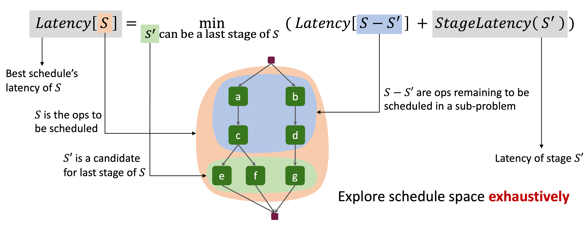
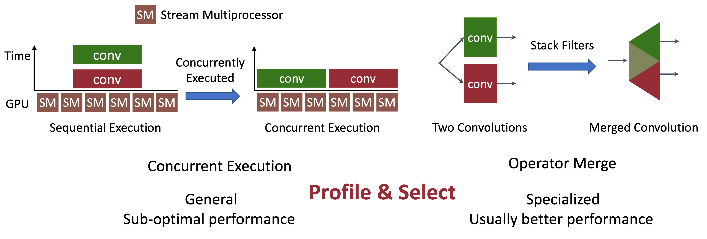

Abstract: To accelerate CNN inference, existing deep learning frameworks focus on optimizing intra-operator parallelization. However, a single operator can no longer fully utilize the available parallelism given the rapid advances in high-performance hardware, resulting in a large gap between the peak performance and the real performance. This performance gap is more severe under smaller batch sizes. In this work, we extensively study the parallelism between operators and propose Inter-Operator Scheduler (IOS) to automatically schedule multiple operators' parallel execution through a novel dynamic programming algorithm. IOS consistently outperforms state-of-the-art libraries (e.g., TensorRT) by 1.1 to 1.5x on modern CNN benchmarks.
Introduction
Inter-Operator Scheduler (IOS)

Overview of Inter-Operator Scheduler
For each subset of operators S (initially, S contains all operators in the model):
- Enumerate a subset S' of S, taking it as the last stage of S.
- Convert the original problem that finds the optimal schedule for S, into a sub-problem that finds the optimal schedule for S-S'.
We prove that its time complexity is \( (n/d+1)^{2d} \), where \(n\) is the number of operators and \(d\) is the maximum number of parallelizable operators. The time complexity is only exponential in \(d\), that is usually small, making it feasible to explore the schedule space exhasutively.
Parallelization Strategies in IOS

Two Parallelization Strategies Parallelizing Operators
- Concurrent Execution: We can launch all kernels concurrently on the accelerator (e.g., GPU).
- Operator Merge: If we can find a single kernel to do all computation of operators in the stage, we can directly use this kernel.
Citation
@inproceedings{ding2021ios,
author={Yaoyao Ding and Ligeng Zhu and Zhihao Jia and Gennady Pekhimenko and Song Han},
booktitle = {Proceedings of Machine Learning and Systems},
title = {{IOS: Inter-Operator Scheduler for CNN Acceleration}},
volume = {3},
year = {2021}
}
Acknowledgments: We want to thank Xiaodan (Serina) Tan for NVIDIA GPU related issues and constructive discussion. This project was supported by the Canada Foundation for Innovation JELF grant, NSERC Discovery grant, AWS Machine Learning Research Award, Facebook Faculty Research Award, MIT-IBM Watson AI Lab, MIT Data Science and AI Lab (DSAIL), NVIDIA, and NSF CAREER Award #1943349.